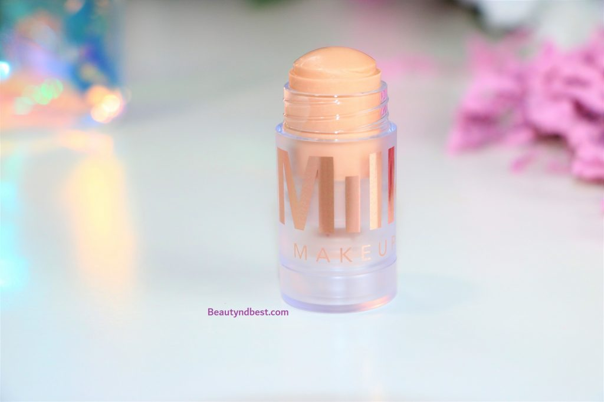

Sephora Favorites Glow For It Review
A highlighter is one makeup product that would make you glow like a Goddess!
Some people prefer powder over liquid highlighters while others vice versa.
And then there are people like me who love a highlighter in every form – be it liquid, powder, stick or compact.
Today’s review would be on a variety of highlighters from various brands in a mixed bag.
The ‘Glow For It’ collection from Sephora is an assortment of highlighters consisting of a liquid, powder,
and stick highlighter, and five deluxe-sized highlighters.
They’re also packaged in a cute collectible and reusable bag.
Artist Couture Diamond Glow Powder in Illuminati
It is an all natural, finely milled loose powder highlighter safe to use on the face, eyes, lips, and body. The Artist Couture Diamond Glow Powder comes in a small tub with the brand logo embellished on the black plastic lid. The rest of the body is transparent and enables you to identify the shade. There is also a shifter provided inside that allows you how much product you want to take out. And because it is a powdered product, the efficient packaging is surely a pleasant addition. There are around 12 shades available in this range.
The Cover FX Custom Enhancer Drops comes in a cylindrical shaped bottle with a dropper-like cap. It is one of the most efficient packaging techniques for liquid highlighters and hence works really well. There are four highlighters in the range and two liquid bronzers. The shade ‘Moonlight’ is a soft champagne color with a shimmer base of mixed pale gold and bronze. This shade is best suitable for light to medium skin tones with a warm undertone.
Milk Makeup Luminous Blur Stick
This is a very interesting product that aims to illuminate the skin by blurring the pores and absorbing the excess oil. A claim of the matte finish and luminous glow is surely a paradox if you don’t understand the difference between glowing skin and oily skin. The product comes in a thick, cylindrical body with the twist up function and a transparent cap.
The product is housed inside a nude hexagonal tube with the holographic embossed print of the brand name.
It has twist-up functionality with a dome edge and the shade name is written on the bottom.
There are 10 shades available in this range. The shade Starstruck is a pale pink with warm undertones and a metallic sheen.
Hence, the highlighter will suit most of the skin tones and won't come across as a loud illuminated look.
The Match Stix Shimmer Skinstick is a versatile product that can be used as eyeshadow, blush or highlighter.
The creamy smooth formula blends flawlessly and doesn’t feel oily. The product can be applied with fingertips as well as brushes.
The texture is such that it won’t tend to remove the foundation underneath and gives a powder-like finish on the skin.
The effect is brilliant as a highlighter as it less sparkly and more illuminated.
The pigmentation is medium to buildable and the sheen of the product can be controlled as per your choice.
The product doesn’t highlight the pores at all. The staying power of the product is around 8-9 hours without any touch.
The Fenty Beauty Mini Match Stix Shimmer Skinstick is absolutely worth the hype.
PROS
- Very cute and travel efficient packaging bag.
- The Artist Couture Diamond Glow Powder in Illuminati is powder highlighter with blinding effect.
- Benefit Cosmetics High Beam is a Liquid Highlighter with subtle shimmer for pale skin.
- Cover FX Custom Enhancer Drop gives a high shine illuminated glow.
- Fenty Beauty Mini Match Stix has a cream to powder formula with medium to buildable iridescent effect.
- Every product is unique, usable and a treat to experience.
- The set is best suitable for fair to medium skin tones.
- The assortment is brilliantly curated and has various benefits.
- The price point is extremely economical.
OVERALL - The ‘Glow For It’ collection from Sephora is a makeup lover’s dream come true where one gets to experience best selling products from various high-end brands. The products that were included were nothing short of excellent and I would highly recommend this kit for fair to medium skin tones.